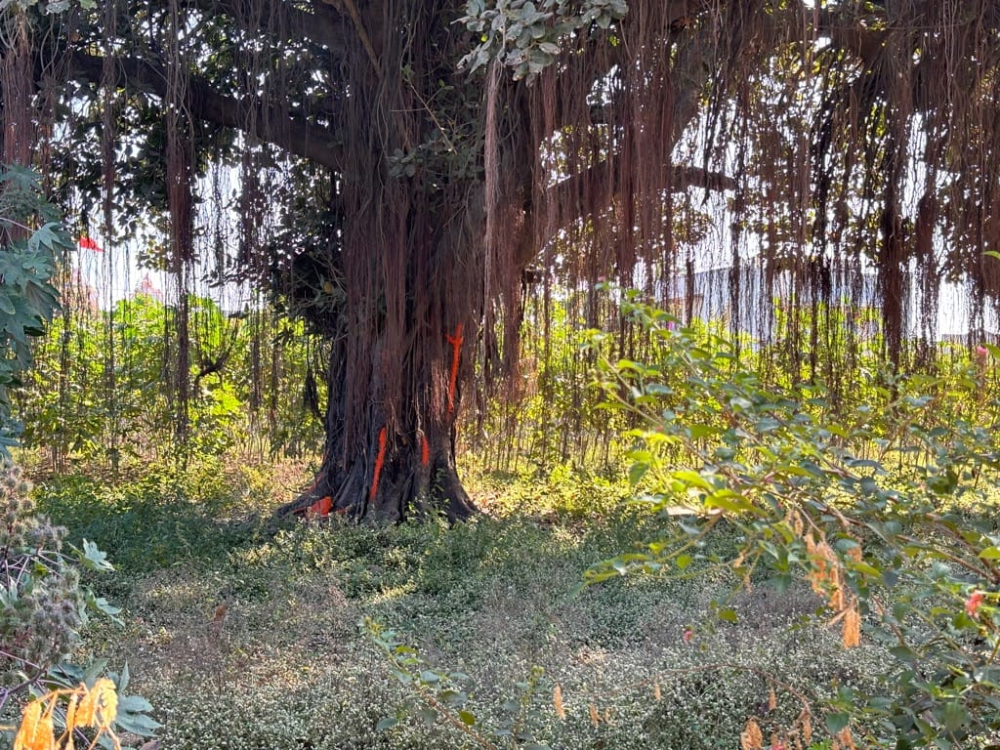

Bhanvad

History of Bhanvad
Bhanvad was founded in 1313 AD by Jethwa ruler Rana Bhanji Jetva, after his previous capital, Ghumli, was sacked. 1313 AD: Bhanvad's story starts with the sacking of Ghumli, the Jethwa dynasty's previous capital. This event prompted the Jethwa ruler, Rana Bhanji Jetva, to establish Bhanvad as a new settlement. The city's name derives from "Bhanji" and "vad" (meaning "garden" or "settlement"). Bhanvad also boasts a rich, local folklore tradition, with bardic tales recounting the exploits of Jethwa rulers like Bhan Jethwa and stories like the one associated with the "Bhutvad" (Ghost's banian tree).
Bhutvad (Ghost's banian tree)
Mangdavalo was a nephew of Bhan Jethva, royal of Dhatarvad. He chases a bandit Bayal Chadva who
has abducted cows from his maternal uncle's town Ghumli. On the way, he meets her lover
Padmavati at Patan who invite her to play Chopat. He promises to return for play and chases
Bayal. In ensued fight, Mangdavalo dies and becomes a ghost as he died unfulfilling his promise.
Following his death, Padmavati becames mad and her marriage is arranged with a Vanik. The
ghost of Mangdavalo stops the marriage party on the way and requests his uncle Alasivala to
arrange his marriage with Padmavati. They marry in a stepwell near a banyan tree which turns in
a palace at night and back to banyan tree in day. The couple lives a mix of happy and sad life
as their union is only possible at night. At last, Padmavati liberates the ghost of Mangdavalo
from his ghostly life at Damodar Kund by drowning with his ashes.
Exploring further
If you'd like to delve deeper, consider visiting the archaeological site of Ghumli to understand Bhanvad's connection to its earlier capital. Additionally, exploring the historical sites mentioned earlier, such as the Bhanvad Palace and the temples, can offer further insights into the city's past.
Sant Shree Trikamacharya

Every being has an internal desire to realise the Creator. Whether an individual has become aware
of this yearning or not is a different matter. After many births this programmed need becomes
realised and the individual awakens to the call of the Supreme. There then arises an
unquenchable thirst, which leads to the treading of a fiery path. The end result being the
evolution of a divine individual whose life touches many, even after His physical disappearance.
Yogi Sant Shri Trikmacharya Maharaj was one such divine soul.
Although born 151 years ago (2014), not much is really known about this mysterious saint and we
have to rely heavily on stories, which have been handed down over the generations. A few
individuals who met “Bapu (father) are still alive, but they were young at the time and as a
result we only have very small glimpses into His life and activities.
The following is a humble attempt to present the life story and miracles of Pujya Shri Trikamji
Bapu. The information contained herein has been collected from various Gujarati literature,
conversations with elders in the community and pilgrimages to the various places Bapu is said to
have visited. This effort has been made in order to preserve His green memory as well as
highlight the effects He had on the social culture at that time for all Bardai Brahmins.
More importantly, we must not lose sight of the fact that through His yogic practices, Bapu
demonstrated how an “ordinary (Bardai) man” rises himself above this material world and attunes
to the Supreme realm through perseverance and regular “sadhna” (spiritual practice).
I hope the reading of this small piece of work inspires the reader towards this eternal and
divine goal.
Written as a humble servant and in prostration to the Supreme Creator!
Jai Shri Trikmacharya Maharaj!